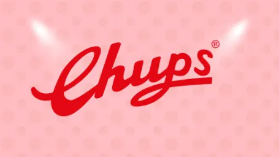

Our Story
- 1958
- 1960
- 1963
- 1969
- 1990
- 1994
- 1995
- 2000
- 2017
-
- The Great Idea
- Chupa Chups Inventor Enric Bernat thought, do you know what the world needs? The world needs a product that "would be like eating a sweet with a fork". And with that, he brought us the first ever lollipop.
-

- First name of Chupa Chups was… GOL?
- Imagine this: the sweet looks a little bit like a soccer ball, and your open mouth is a soccer ball net? Weirdly, it didn’t stick, and the name was changed to CHUPS in 1960.
-
- You guys renamed your favorite lollipop
- We had a jingle which went a little something like this…. Get something sweet to lick, lick, lick, like a Chups (Chupa un dulce rameoe, chupa chupa chupa un CHUPS). Everyone loved it so much, it gave us the final name “Chupa Chups”.
-
- Salvador Dali shaped the Chupa Chups brand
- The famous artist sketched what would become the basis of the Chupa Chups logo on a piece of newspaper. Just like that!
-
- World Domination
- The 90s bought us some great things, including Tamagotchi’s, Light up Sneakers and Britney Spears, but more importantly, Chupa Chups began selling in 164 countries around the world, meaning you’ll find the iconic lollipop almost everywhere!
-
- The biggest Chupa Chups lollipop EVER
- Originally made as a gift for the formed Barcelona FC footballer Histro Stoichkov, this ginormous lollipop weighed in at a huge 735g. It would take hours, maybe days to finish it…. it’s still produced nowadays for some markets, just in case you wanted to take on a challenge.
-
- Chupa Chups visited outer space
- Russian astronauts at the MIR station brought their favorite lollipops Chupa Chups with them to outer space. Like we said, you can find it almost everywhere.
-
- Chupa Chups as nickname for a species of marine sponges?
- A scientific expedition to the Antarctic discovered a new species of sponge, and you’ll never guess what they decided to nickname it…. we promise it's not a joke.
-
- Forever Fun
- You’ve got to keep your childish spark alive forever. You know what they say, fun is for life, not just for kids… or something like that anyway.